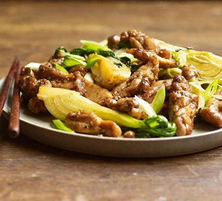

Salt and Pepper Chicken

A perfect recipe for some absolutely gorgeous Salt and Pepper Chicken!
You'll learn the best way to make this scrumptious dish.
Ingredients
- 500g skinless, boneless chicken thighs
- 1 tsp flaky sea sea
- 1 tsp Sichuan peppercorns (you can use normal peppercorns)
- 1 tbsp cornflour
- 1 tsp Chinese five-spice powder
- 1 tsp sesame seeds
- 1 tbsp olive oil
Steps
- Cut the chicken thighs into strips. Crush the salt with the peppercorns in a pestle and mortar, then mix with the cornflour and five-spice and tip into a sandwich bag. Tip the chicken into the bag and shake well to coat in the flour mixture.
- Cut the chicken thighs into strips. Crush the salt with the peppercorns in a pestle and mortar, then mix with the cornflour and five-spice and tip into a sandwich bag. Tip the chicken into the bag and shake well to coat in the flour mixture.
- Mix the soy and honey and tip into the pan along with the Asian greens, cook for 2-3 mins further until everything is well coated and the greens are cooked through. Serve topped with coriander and sliced spring onions alongside some cooked rice.
Home page